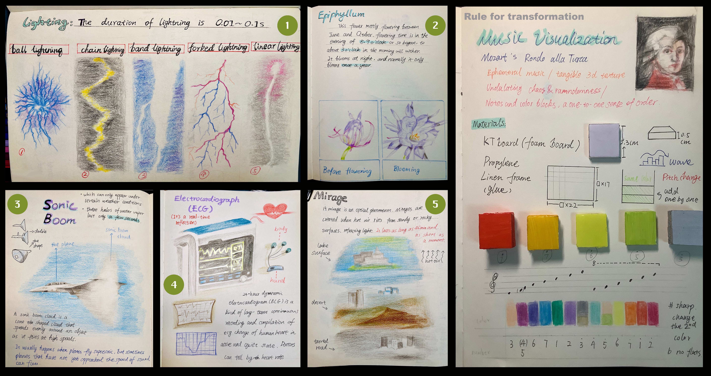

About Me 关于我
Click here to download Resume 点击此处下载简历
I’m Yishan Hou, a digital artist from Beijing, China, born in 2002. Currently, I’m studying Art & Tech at the School of the Art Institute of Chicago (SAIC), where I’ll graduate in the spring of 2025. As a freelance illustrator and independent game developer, I craft interactive experiences that blend storytelling, technology, and emotion. My work often combines deep reds, white, and black, with vibrant colors to evoke a range of moods. Through creative coding, I produce art that breaks conventional boundaries and is accessible to all.
In my creations, I build immersive worlds and characters, inspired by fairy tales and personal experiences. Each piece offers an opportunity to explore, interact, and connect—transforming imagination into reality. My projects merge the artistry of 2D interaction with the precision of engineering and computer science, reflecting the innovative spirit of my generation.
For me, art is a conversation. It sparks connections, provokes thought, and creates spaces where each interaction reveals something new. My work lies at the crossroads of creativity and technology, a place for discovery and personal engagement.
我是侯懿珊，来自中国北京的数字艺术家，2002年出生。目前，我在芝加哥艺术学院（SAIC）攻读艺术与科技专业，将于2025年春季毕业。作为自由插画师和独立游戏开发者，我致力于创作融合故事、技术与情感的互动体验。我的作品常常将深红、白和黑的色调与鲜艳的色彩相结合，以唤起不同的情绪。通过创意编码，我的艺术作品突破传统界限，力求让每个人都能感受到其中的魅力。
我的创作灵感源自童话故事与个人经历，在其中构建出引人入胜的世界与角色。每一件作品都为观众提供了探索、互动与联结的机会，将想象力转化为触手可及的现实。我的项目融合了二维互动艺术与工程、计算机科学的精准，展现了我们这一代人对创新的追求。
对我来说，艺术是一种对话。它激发联系，启发思考，创造空间，让每一次互动都带来新的发现。我的作品处于创意与技术的交汇点，提供了一个充满探索与个人参与的空间。
My Arts 我的作品
I use a variety of mediums for self-expression, and self-expression through art has always been a theme in my life. In this way, I engage in self-potential and emotional exploration. I create art to show people the characters and stories I write. In my freelance illustrator practice, I illustrate different clients or other artists in their imaginary worlds.
我使用各种媒介进行自我表达，通过艺术进行自我表达一直是我生活的主题。通过这种方式，我进行自我潜能和情感探索。我进行艺术创作，向人们展示我笔下的人物和故事。在我的自由插画师实践中，我为不同的客户或其他艺术家绘制他们想象中的世界。
Digital Painting 数码绘画
Series 1: Red and Black series｜红与黑
This series portrays an apocalyptic world, exploring the physical manifestations of fear in human society through distorted and eerie depictions of both the interior and exterior. There is no clear boundary between the inside and outside—the spaces are filled with alienation and distortion of reality. Outside the window, a horrific landscape unfolds in a blend of black and red, reminiscent of a Hyakki Yakō procession, while the interior serves as both a gaze and reflection on this world. Here, fear is no longer just an element of the supernatural or the unknown; it is the result of human society’s own twisted transformation. Each piece aims to reveal the invisible threats that transcend conventional definitions of fear, becoming an oppressive presence we cannot escape.
这个系列作品描绘了一个末日般的世界，通过窗内外的扭曲与诡异景象，探索了人类社会恐惧的具象化。画中的室内和窗外没有清晰的界限，所有的空间都充满了对现实的异化与变形。窗外是一个黑红交织的恐怖景象，仿佛百鬼夜行，而窗内则是对这种世界的凝视与反思。在这里，恐惧不再仅仅是神秘或超自然的元素，而是人类社会自我扭曲后的呈现。每一幅作品都试图揭示那种无形的威胁，它们超越了传统的恐惧定义，转化为一种存在于我们周围、无法逃避的压迫感。


Series 2: The Seed｜种子
I imagine Chicago as a city sprouting new shoots, with Cloud Gate representing that seed. The connections between people are like an electronic neural network, spreading in all directions. My artwork, through photo collages, reflects this idea, with textures and patterns sourced from imprints on the walls, streets, and wheels of Chicago's Loop district. They capture the city's vitality and the connections between people.
我将芝加哥想象成一颗长出嫩芽的种子，而《云门》就是那颗种子。城市的连接像电子神经网络，横竖交织，蔓延至每个角落。我的作品通过照片拼贴画呈现这一构想，纹理和肌理来源于芝加哥Loop区街道上的各种墙壁、道路和车轮上的印痕。它们反映了城市的生命力和人与人之间的连接。


Series 3: Mental topography｜心理地形图
I miss studying psychology in high school. As inspiration, I used Freud's concept of “ego-ego- superego” to create a topographical map of myself, showing the process of datamining my emotions.
我怀念高中学习心理学的时光。作为灵感来源，我利用弗洛伊德的 “自我-自我-超我 ”概念绘制了一幅自己的地形图，展示了我对情绪进行数据化的过程。


Series 4: Magician's Prophecy｜魔术师的预言
This is a long-term project, through the study of mystics, to carry out the tarot card, a kind of divination method in mystics. Through studying the styles of different series of tarot cards, the illustration creation with narrative and ritual sense is derived. In the project, I created unique images, complexity, and decorative characteristics based on Tarot culture. I drew four narrative illustration works based on my text.
这是一个长期项目，通过对神秘主义者的研究，将塔罗牌这种神秘主义者的占卜方法付诸实践。通过研究不同系列塔罗牌的风格，衍生出具有叙事性和仪式感的插画创作。在这个项目中，我以塔罗牌文化为基础，创造了独特的形象、复杂性和装饰性特征。我根据文本绘制了四幅叙事性插图作品。
Picture 1
In the dark room, a magician opens his desk, telling about the birth of human desire. The Holy cup, coin, swords on the table, and the wand on the magician's hand are a collection of four elements of the lesser Arcana. All of them converge into a circle, becoming the center and no longer the center. It was an important ritual, and the power-absorbing magician created the following three stories.
在黑暗的房间里，一位魔术师打开书桌，讲述人类欲望的诞生。桌上的圣杯、硬币、剑，以及魔术师手上的魔杖，集合了小阿卡纳的四种元素。所有元素汇聚成圆，成为中心，又不再是中心。这是一个重要的仪式，吸收力量的魔术师创造了以下三个故事。
Picture 2
In the corridor extending far away, animals on the left and right guard the cauldron in the middle. A giant mushroom is being heated, the symmetrical decoration on both sides and repeated floor pattern show that the steam of the mushroom brings illusion. Human beings who indulge in illusion are killed and become fuel, forming the Samsara of the wheel of fortune.
在向远处延伸的走廊上，左右两边的动物守护着中间的大锅。一朵巨大的蘑菇正在加热，两边对称的装饰和重复的地板花纹表明，蘑菇的蒸汽会带来幻觉。沉溺于幻觉的人类会被杀死，成为燃料，形成风水轮流转的三世轮回。
Picture 3
On a long sailing ship, the hanged man hanging on the sail symbolizes a trial. The man who wants to go deep in the water stands at the mast listening to the sound waves, the drunken man sails, and the man who comes from the sea devours his fellow man. The devil is singing the trumpet, attracting the fish with the secret in the belly to take the bait. They come from afar, following the guidance of the hermits who incarnate as fish and are full of motivation to move forward in this sea trial.
在一艘长长的帆船上，悬挂在帆上的吊人象征着一场审判。想深入水底的人站在桅杆旁聆听声波，醉酒的人扬帆起航，从海里来的人吞噬同伴。魔鬼唱着号角，吸引着腹中有秘密的鱼儿上钩。他们远道而来，跟随化身为鱼的隐士的指引，在这场海试中充满了前进的动力。
Picture 4
On the path in the forest, the knight holding the banner of the sun returned. The twisted branches and leaves in the distance are bleeding, and those in the near are gradually withering. The knight met a traveler who had been swallowed up by the devil. Behind him is a 'Tower' symbolizing destruction, suggesting that he is trapped in layers of mist. The eyes of temptation are watching, he may be a savior or just another failed conqueror.
在森林的小路上，手持太阳旗帜的骑士回来了。远处扭曲的枝叶在流血，近处的枝叶逐渐枯萎。骑士遇到了一位被恶魔吞噬的旅人。他的身后是一座象征毁灭的 “塔”，暗示他被困在层层迷雾之中。诱惑的眼睛在注视着，他可能是救世主，也可能只是又一个失败的征服者。


Series 5: Flower and Wood Carving｜花和木雕
I wanted to present a story about the meaning of life in the form of a picture book. In the story, there are two opposite expressions of life force, or different ways of living, so to speak.
The inspiration for this story came from the wood carving and the flowers in my home. For as long as I can remember, no matter how many things have been moved in and out of my home, and how many things have been placed next to the wood carving, it has never been moved from its place, it just seems to grow there. Flowers in a vase at home, on the other hand, go through the process of blooming, wilting, and being replaced in a matter of a week. I hope to work with these two physical objects that show life force in different ways and present a metaphorical narrative of wood carving and flowers in the form of a picture book. The story presents two opposite embodiments of life, which can also be described as different outlooks on life.
The story is unfolded from the witch's house. The wood carving and flower in the room admire each other and want to be each other. The flower has a short lifespan, but it is full of vitality when it blooms, which is what the unchanging woodcarving yearns for. The woodcarving has a long life and can always show its static beauty, which is what flower longs for. With the help of the witch, they got their wish and exchanged souls. Finally, the flower withered, and the soul of the flower watched the soul of the woodcarving dissipate.
我想以图画书的形式讲述一个关于生命意义的故事。在故事中，有两种截然相反的生命力表达方式，也可以说是不同的生活方式。
这个故事的灵感来源于我家的木雕和花卉。从我记事起，不管家里的东西搬进搬出多少次，也不管木雕旁边摆放了多少东西，它从来没有离开过自己的位置，似乎就长在那里。而家里花瓶里的花朵，一周之内就会经历盛开、枯萎、更换的过程。我希望通过这两种以不同方式展现生命力的实物，以图画书的形式展现木雕和鲜花的隐喻叙事。故事呈现了两种截然相反的生命体现，也可以说是不同的人生观。
故事从女巫的房子展开。房间里的木雕和花朵互相欣赏，希望成为对方。花的寿命很短，但它绽放时充满生机，这正是一成不变的木雕所向往的。木雕的寿命很长，可以永远展现出静态的美，这也是花朵所向往的。在女巫的帮助下，他们如愿以偿，交换了灵魂。最后，花儿凋谢了，花儿的灵魂看着木雕的灵魂消散。


Series 6:Space Junk｜太空垃圾
Painting and photography. These resilient scraps of paper once tried to connect with outer space through a microphone, but unfortunately, they have become space junk.
绘画和摄影。这些不屈的纸片曾试图通过麦克风与外太空连接，然而，不幸的是，它们最终成了太空垃圾。


Series 7: 100 Different Dreams (Private Commission)｜100张不同的梦想（私人稿件）
I have drawn over 100 original characters created by others, and I am honored to be a part of depicting their worlds. I love original characters because they connect me with others and serve as a way for me to seek out the things I cherish.
我画了100多张其他人的原创角色，很荣幸能成为描绘他们世界的一部分。我热爱原创角色，因为它们让我与他人建立联系，也成为我寻找自己珍惜事物的一种方式。


Online Interactive｜线上互动
Creative Coding Works｜创意编程作品
This is my online coding portfolio, showcasing a collection of works primarily created through programming. Most of the projects are websites, web-based applications, or generative art pieces.
这是我的线上编程作品集，展示了主要通过编程实现的作品，包括网站、网页应用以及生成艺术。
Project 1: The collection of works|作品合集
🌟❤️Click to open this work 点击打开作品网站🌟❤️
Project Github Page
This is a website featuring multiple small projects, divided into five sections.
这是一个包含多个小项目的网站，分为五个部分。
Home Page|主页
The homepage features a random walk design where a pixel character interacts with the mouse position. The character will chase the cursor, and holding down the mouse button slows its movements. Strawberry particles in the background produce collision sounds and gradually disappear over time.
主页采用随机游走设计，像素小人会与鼠标位置进行互动。小人会追逐鼠标光标，按住鼠标时小人的行动将减缓。背景中的草莓粒子会发出碰撞声响，并随时间逐渐消失。
Faces｜“脸”
This is a generative art project created with p5.js. It randomly matches facial features' sizes and colors with face sizes, generating an increasing number of faces on the screen. Refreshing the page resets the artwork.
这是一个用 p5.js 制作的生成艺术项目，随机匹配五官大小、颜色与脸部大小，屏幕上会出现越来越多的脸。刷新网页即可重置作品。
Random Circles｜随机圆形
This is a small interactive project where you can randomly spray paint with the mouse. Colors are random but vary within a range based on the mouse's position. After clicking the pixel image in the center, you can paint vibrant patterns effortlessly by moving the mouse without holding the button.
The text "Mansikka" is the name of the little girl featured in the avatar. I wanted to use this project to showcase the character's charm in diverse ways.
这是一个用鼠标随机喷洒颜料的小互动项目，颜色随机但在鼠标位置的范围内变化。点击中间的像素图后，无需一直按住鼠标，轻轻摆动就能画出绚丽多彩的图案。
文字“Mansikka”是这个头像中小女孩的名字。我希望用这种方式多样化展示角色的魅力。
Snow Particles｜雪花粒子特效
This is a practice project that simulates 3D snowflake effects using 2D particle effects. It does not include interactive elements.
这是一个用 2D 粒子效果模拟 3D 雪花效果的练习项目，无互动要素。
Fruit Brush｜水果画笔工具
This is a drawing project featuring fruit brushes. You can paint with two types of brushes: apple and banana. After clicking the button, hold and drag the mouse to draw. The project includes an eraser function, the ability to clear the screen by pressing "C," and options to change the screen color.
这是一个水果画笔作品，可以用两种画笔（苹果和香蕉）进行绘画。点击按钮后，按住鼠标拖动即可画画。项目还提供橡皮擦功能，按下“C”可以清空屏幕，并支持更换屏幕颜色。
Tarot Reading｜塔罗牌占卜
Displaying a specific tarot card in front of the camera will randomly show an appropriate reading in a manner similar to a game dialog box. I see it as a chance to create a way to play around with my world setting & kind of IP interactive web design.
Check 22 Major Arcana cards, each with random 1-6 options.Four of the cards (The Fool, The World, The Lovers, Death) have hidden options (Branch). Please note that some browsers do not support this program to run.
NOTE: This program only supports specific decks of Rider-Waite, tap into the program for more information.
当将特定的塔罗牌展示在摄像头前时，网页会随机显示与之对应的解读，类似于游戏中的对话框。我将其视为一个尝试将我的世界观和IP与互动网页设计结合起来的机会。 该网页包含22张大阿尔卡纳牌，每张牌都有1到6个随机选项。其中四张牌（愚者、世界、恋人、死亡）具有隐藏选项（分支）。请注意，有些浏览器不支持该项目运行。
注意：该项目仅支持特定牌面的伟特塔罗牌，点进项目查看更多信息。
Project 2: Internet Letter｜互联网信件
Click to open this work 点击打开作品网站
Project Github Page
This project is a sound and visual interactive experience. The audio is original and the sound texture is derived from simulating the sound of a public piano (located in Hong Kong) played by a friend's recording, aiming to convey a sense of emotional connection. The actual sound in the project is the quality of the sound of that piano imitated by my MIDI playing.
The animations in the project are black, white and gray by default, reflecting the visual style of simplicity and abstraction. The main interface contains a horizontal line on which the animation will be displayed. There is a triangle graphic at the bottom of the interface. When the mouse hovers over the triangle, an input box will be displayed. The user can type in any character and press Enter. The character will be transformed into an animation and a small piece of music will be played, which lasts about 3 to 6 seconds and then disappears. Some of the different punctuation marks correspond to different melodies. After input a number from 0 to 13 and press Enter will play the music of that number.
Hidden Feature: When certain characters such as ?!……/ are input, a limited randomness is triggered, selecting from specific music clips.
(only English or Chinese)
One reason I chose punctuation marks is that I noticed I rarely use complete punctuation when messaging online. Through this, I aim to amplify their symbolic meaning and emotional value. Unlike words, punctuation represents a universally abstract language that can be directly felt.
这个项目是一个声音与视觉互动体验。音频为原创，声音质感来源于模拟由朋友录制的公共钢琴（位于香港）演奏的声音，旨在传达一种情感上的联系感。项目中实际的声音为我用MIDI演奏模仿该钢琴的声音质量。
项目中的动画默认为黑、白、灰三色，体现简洁与抽象的视觉风格。主界面包含一条横向的线条，动画将在这条线上展示。界面下方有一个三角形图形，当鼠标悬停在三角形上方时，将会显示一个输入框。用户可以输入任何字符并按下 Enter 键，字符将会转化为动画，同时会播放一小段音乐，持续大约 3 到 6 秒后消失。其中有些不同的标点符号对应着不同的旋律。 输入 0 至 13 之间的数字并按 Enter 键后，将播放该数字的音乐。
隐藏功能：输入 ?!……/ 等字符时，会触发有限的随机性，从特定的音乐片段中选取播放(仅限中英文)。
我选择标点符号的原因之一是，我发现自己在网上发消息时很少使用完整的标点。我想借此放大标点符号的象征意义和情感价值。与文字不同，标点是一种不同语言通用的、可直接感知的抽象表达。
Project 3: I Found You｜我找到你了
Click to open this work 点击打开作品网站
This is an interactive black-and-white website designed to evoke a labyrinthine experience. It has no sound, drawing inspiration from Kenji Mizoguchi's black-and-white films and the concept of a massive, hidden terror akin to Godzilla. The branches are not fixed paths and may lead users to different locations, making it easy to get lost within the site.
The materials include processed photos I took, along with my own illustrations. The overall aesthetic is a misty, grayish-dark morning, resembling a black bramble forest with a hint of Lovecraftian literary dread. It feels like a gothic garden in shadow, inspired partly by 絶望plantation, a song by the band Yousei Teikoku.
This piece conveys a chilling sense of emotion, evoking an eerie unease. It seeks to depict a state where humanity has shed its inner fear, walking like soulless husks.
This work uses the Wix.com website builder, no programming
这是一个黑白色的交互网站，旨在营造迷宫般的体验。网站无声，灵感来源于沟口健二的黑白电影，以及类似特斯拉这样藏于深处的巨大恐惧概念。分支路径并非固定，可能会引导用户进入不同的地方，很容易在网页中迷失。
素材包括我拍摄并处理的照片，以及我的手绘作品。整体氛围像是雾蒙蒙的灰暗清晨，仿佛黑色的荆棘丛，带有洛夫克拉夫特式的文学恐惧感，犹如笼罩在阴影中的哥特花园。这一项目的灵感部分来源于乐队妖精帝国的歌曲《絶望plantation》。
这个作品传递了一种冰冷的情绪，令人不寒而栗。它试图展现一种情境，就像人类摆脱了灵魂中的恐惧，行尸走肉般地行走着。
本作品使用 Wix.com 网站生成器，无需编程。
Project 4: Hey^ ^
Click to open this work 点击打开作品网站


This is a small collection of works, including some of my GIF collages, original sounds, and fan websites of other artists I admire. There are five clickable branches. Hope you enjoy exploring!
I used Maya 3D for modeling and Photoshop for creating animation effects.
This work uses the Wix.com website builder, no programming.
这是一个小型作品合集，包含我的一些GIF拼贴图片、原创声音，以及我喜欢的其他艺术家的同人网站。共有五个可点击的分支。希望你能玩得开心！
我使用了Maya 3D建模工具，并通过Photoshop制作了动画效果。
本作品使用 Wix.com 网站生成器，无需编程。
Project 5: ❤️Animals❤️｜❤️动物们❤️
The webpage has not been released on public platforms yet. This page jump only.
该网页暂未发布到公共平台，仅限此页面跳转。
Click to open this work 点击打开作品网站
As I enjoy watching animals and their behaviors, and often watch animal videos, I created this easygoing and fun website to bring some joy and relaxation to you.
由于我平时喜欢小动物，时常关注它们的举止，并且经常看动物视频，所以我制作了这个轻松愉快的网站，希望能带给你一些欢乐和放松。
Blockchain Art Works｜区块链艺术作品
-
Project 1: Cyber Boba Tea｜赛博奶茶
Click to open this work 点击打开作品网站
Project Github Page
Cyber Boba Tea is a decentralized application built on smart contracts and presented as a web page, which randomly selects a boba tea flavor for the user. A MetaMask account is required. To use it, simply input any custom text (even your friend's name), click the button, and once the MetaMask confirmation popup appears, confirming the estimated fee, the website will randomly generate options for "flavor, toppings, and temperature," creating a unique Cyber Boba Tea just for you.
The design is simple, focusing on functionality and ease of use. The inspiration comes from how the younger generation often "cyberizes" everyday things and explores virtual reality in the online world. With boba tea being a popular beverage in China, it became the central idea for this project.赛博奶茶是一个基于智能合约的去中心化应用程序，以网页形式呈现，能够随机为用户选择奶茶口味。用户需要拥有MetaMask账户。操作方法是，输入任何自定义文字（甚至是朋友的名字），点击按钮后，MetaMask会弹出确认按钮，消耗一定的手续费后，网站会随机生成奶茶的“口味、调料、温度”三个选项，帮你打造一杯独一无二的赛博奶茶。
此作品界面简洁，注重功能性和易用性。灵感来源于年轻一代将身边事物“赛博化”，以及在网络世界寻求虚拟现实的趋势。奶茶作为中国流行的饮品，成为这个项目的核心构思。 -
Project 2: FxHash NFTs
Cat Eyes｜猫眼
Click here to open the artwork page 点击这里打开作品页面
This piece expresses the feeling of "seeing the world in the dark," with eyes serving as bridges of communication. Various cat eyes emerge from the darkness, representing the diverse aspects of society and observation. It reflects how humans search for and observe the world in the dark.
这个作品试图表达“在黑暗中看世界”的感觉，眼睛作为沟通的桥梁。在黑暗中，形形色色的猫眼不断出现，象征着社会的各种面貌和观察。这是一个关于人类如何在黑暗中寻找和观察世界的表达。
Heart Wave｜心脏波
Click here to open the artwork page 点击这里打开作品页面
Photosensitive Epilepsy Warning
光敏性癫痫预警This work captures the sensation of a heart passionately beating to the rhythm of music and movement. Using bold colors and ever-changing shapes, I aim to simulate the pulsating rhythm of the heart, mirroring the way it beats with energy in sync with music.
这件作品表达了心脏随着音乐和律动激情跳动的感觉。通过大胆的色彩和不断变化的图形，我想模拟心脏的节奏与激情，展示心脏在音乐的波动中跳动的感觉。
Sound｜声音
Music|音乐
Borderland Forest Waltz
Music of my character Elena
我的角色伊琳娜的主题曲
The saga, war
Fan music of Saga of Tanya the Evil
动画《幼女战记》同人曲
My visual novel OST.1
我的视觉小说OST.1
My visual novel OST.2
我的视觉小说OST.2
Experimental music|实验性音乐
Standby Mode
Name Brand
Thinking Rule
Hurt
Ready
Afternoon
I Feel Peaceful
Dots
Mixed Celtic
Music for my video piece
为我的视频配乐
Game 游戏
2D Game|二维游戏
-
Game 1: AppleCat｜苹果猫
2D collecting action game, 2023-2024, Unity.
收集动作游戏Click to play it on itch.io 点击在itch.io玩
In this little cute game, your goal is to eat all the apples within 42 seconds! Avoid collisions and beware of the Green Grass, which will make your apple cat disappear if touched. Use the left mouse click to destroy the grass. The game will automatically restart when time is up!
在这个可爱的小游戏中，你的目标是在42秒内吃掉所有的苹果！不过要小心绿色草地，触碰到它会让苹果猫消失。使用左键点击摧毁草地。时间结束后，游戏会自动重启！
-
Game 2: A Long Story (demo)｜长长的故事（试运行）
2D adventure collecting game, 2023-2024, Unity.
收集冒险游戏Click to play it on itch.io 点击在itch.io玩
This is a refreshing side-scrolling exploration game, created to showcase the childhood and life experiences of my original character, Cider Willo the Apple Cat. As a practice project, this demo features elements like item collection, map transitions, and game art. I have created the character and some of the artwork from scratch.
这是一款画风清新的横版探索游戏，旨在展示我的原创角色苹果猫（Cider Willo）的童年和人生经历。作为练习项目，这个demo包含了收集要素、地图切换和游戏美术等内容。我原创了角色和部分美术作品。
-
Game 3: The Circle｜“圆”
Text adventure game, 2024, Inky.
文字冒险游戏Click to play it on itch.io (English Version)
点击在itch.io玩（中文版）
The Circle is a short text adventure game in which you will speak in the first person to the strange entity known as The Circle. Will you discover its secrets, or will you die in confusion? It's all up to you. There are multiple branching endings. The inspiration for this game came from the idea of splitting myself into two parts: "The Circle" and "The Player's Perspective."
《圆》是一款简短的文字冒险游戏，你将以第一人称与名为“圆”的神秘存在对话。你能揭开它的秘密，还是会在迷茫中死去？一切都由你决定。游戏拥有多个分支结局。创作此游戏的灵感来源于我将自己分裂成两部分：“圆”和“玩家视角”。
-
Game 4: Magic Dream｜魔法之梦
Visual novel, 2024, Renpy.
视觉小说The game has not been released online yet.
游戏暂未线上发行。This is a simple and heartwarming visual novel I created, centered around my character, Mansikka—a dessert witch and the embodiment of the "Strawberry Fairy Tale World." The story begins when the player finds themselves in an unfamiliar snowy landscape shortly before Christmas and meets Mansikka. Together, they experience a series of warm and delightful events.
The game features commissioned artwork by other artists, including the character’s costume design. I conceived the character's backstory and setting and wrote the script.这是我制作的一款简单而温暖的视觉小说作品，围绕我的角色Mansikka展开。她是一位甜点魔女，也是“草莓童话世界”的化身。故事从圣诞节前夕，玩家在陌生的雪地中遇见Mansikka开始，随后发生了一系列有趣而温馨的故事。
游戏美术由其他画师完成，包括人物的服装设计。我构思了角色的背景故事和设定，并亲自撰写了剧本。
3D Game|三维游戏
-
Game 1: Interstellar Snowfall｜星际雪降
3D collecting and adventure game, 2023-2024, unity
The game has not been released online yet.
游戏暂未线上发行。Downloadable app for mac 可下载mac版本:
2.5GB.app google drive link
1.54GB.zip google drive linkicon:

Interstellar Snowfall is a 3D exploration and collection game. The protagonist lands on a vast snowy plain, embarking on a mysterious journey. To uncover the eternal memories of this snowfield, they must find 10 fragments scattered throughout. Each stage grows increasingly challenging, culminating in a leap off the edge of the planet to embrace rebirth.
Blending uncanny aesthetics with a snowfield sci-fi theme, the game incorporates AI-generated art, text, and music sourced from the web. In the final stage, a humanoid model of myself appears, symbolizing the end of my journey.《星际雪降》是一款3D探索收集游戏。主人公降落在一片广袤的雪原，开启了一段奇妙旅程。为了揭开这片雪原永不消逝的记忆，主人公需要寻找散落的10个碎片。每个阶段的环境愈加严峻，最终，主人公将跳下星球边际的悬崖，迎来重生。
游戏结合了怪核风格与雪原主题的科幻美学，运用了AI生成的美术与文字，以及来源网络的音乐素材。在最后的关卡中，出现了我的人型建模，象征着我的旅程也在此结束。
Video 视频
My videos are in the form of short documentaries of my musings on life, most of which stem from the vegetation and animals of downtown Chicago. These videos are the realization of fantasies of the natural world in my head and reflections on real life.
我的视频以纪录短片的形式记录了我对生活的思考，其中大部分源自芝加哥市中心的植物和动物。这些视频是我脑海中对自然世界幻想的实现，也是对现实生活的反思。
Video 1: Nowhere, Now-here｜无处，此刻
1-channel video with digital sound, 2min. 29sec.
Click to watch it on vimeo 点击在vimeo观看
Nowhere, Now-Here is a video that considers the link between the modern city and nature, and attempts to explore where the real me is. There is a kind of spiritual Druidic practice embedded in the work - I explore the mystery of human and nature worship by touching and feeling the bark of a tree to resonate with it in a spiritual way. Gaining energy from nature helps me to think about my deep connection to nature as a human being in the middle of a culture clash.
《无处，此刻》是一个思考现代城市与自然的联系，以及试图探索真实的我身处何处的作品。作品中蕴含一种灵性上的德鲁伊实践——我通过抚摸树木的表皮来和它进行灵魂上的共鸣，探索人类与自然崇拜的奥秘。从自然中获得能量，帮助我在面对文化冲突时对于我作为人类与自然深度联系的思考。
Video 2: When You Sink｜当你沉没
1-channel HD video with digital sound, 7min. 36sec.
Click to watch it on vimeo 点击在vimeo观看
What will I find as my soul wanders around the neighborhood? As the real world sinks into the ocean, will environmental pollution be drowned out by the blue?
当我的灵魂在附近游荡时，我会发现什么？当现实世界沉入海洋，环境污染会被蓝色淹没吗？
Video 3: Untitled｜无题
1-channel HD video with digital sound, 2min. 13sec.
Click to watch it on vimeo 点击在vimeo观看
Motion and stillness, continuity and discontinuity.
运动与静止，连续性与间断性。
Video 4: Music Visualization-Mozart｜音乐可视化-莫扎特
1-channel HD video with piano music, 2min. 25sec.
The video has not been released on public platforms yet.
视频暂未发布到公共平台。
In fact, there are many transient phenomena in nature that can be transformed. In some form, they can become tangible and exist forever. Some chaotic phenomena also have a certain order behind them, but we haven't discovered it yet. Because I have studied piano and been exposed to classical music for a long time, I try to blend sound and art into a visual artistic effect. I aim to create new media that can be either static or dynamic. I add my piano music to the soundtrack, based on the one-to-one correspondence of notes with different colors, and convert the ephemeral music into a work of digital media with epochal significance.
事实上，自然界中有许多短暂的现象可以被转化。在某种形式下，它们可以变得具体并永恒存在。一些混乱的现象背后也隐藏着某种秩序，但我们尚未发现它。由于我长期学习钢琴并接触古典音乐，我尝试将声音与艺术融合，形成一种视觉艺术效果。我力图创作一种既可以静态也可以动态的新媒体。我将我的钢琴音乐加入到配乐中，根据音符与不同颜色之间的一一对应关系，将短暂的音乐转化为具有时代意义的数字媒体艺术作品。
Video 5: Rhythmic Patterns｜律动的图案
Silent video, 1-channel HD video, 0 minutes 31 seconds.
This is a stop-motion animation video created as a group project. I contributed by providing props, ideas, some of the shooting, editing, and more. The video showcases a rhythmic movement through the arrangement of colors and patterns of various objects, presenting a visual representation of a rule-based motion.
这是一个小组合作的定格动画视频，我负责提供道具、构思、部分拍摄和剪辑等工作。视频通过一系列物品的颜色和图案排列，展示了一种规则性的运动，呈现出独特的视觉效果。
Physical|实体作品
Neon: Flying Head｜飞翔的头颅
Installation, 2023, Neon on the wall
This neon artwork reflects my fascination with unusual gore films. The original design is inspired by a sketch of me separating my head from my body. In the piece, the green and blue areas represent rational thought, while the red symbolizes the erupting "thought blood"—a visual metaphor for intense, occult thinking. The inspiration for this piece comes from the music of the Japanese artist Maretu.
这件霓虹作品展现了我对独特血腥电影的兴趣。原始设计灵感来自一幅我将头部与身体分离的草图。作品中，绿色和蓝色部分代表理性思维，而红色则象征着喷发的“思维之血”，是对剧烈、玄秘思维的视觉隐喻。这件作品的灵感来源于日本音乐家Maretu的歌曲。
Beijing Weather Visualizer｜远程天气可视化
Installation, 2023-2024, coding and microcontrollers, p5js, Arduino
The Beijing Weather Visualizeris a small project designed to display real-time weather information for Beijing. Since I am based in Chicago and my family lives in Beijing, I wanted a way to keep them updated on the weather. The device uses p5.js to fetch weather forecasts online through an API, displaying tomorrow’s date, weather, and temperature.
Using an 8x8 LED matrix, the project shows simple icons representing sunny or rainy weather. When there’s a high chance of rain in Beijing, it will display a 🌧️ icon, and when the weather is clear, a 🌞 icon. This project serves as a small, functional desk companion, reminding me and my family about the weather every day.
《远程天气可视化》是一个小型项目，旨在实时显示北京的天气信息。由于我身处芝加哥，家人们则在北京，我希望能够及时了解并提醒他们天气状况。这个设备通过 p5.js 从天气 API 获取天气预报，显示明天的日期、天气和温度。
项目通过一个 8x8 的 LED 点阵显示晴天或雨天的图标。如果北京明天的降雨概率较高，它会显示🌧️图标，若天气晴朗，则显示🌞图标。这个项目看起来简单，可以放在书桌上，每天提醒我和家人关注天气变化。
Digital Awakening｜脱离电波
Gif, 2024, coding and microcontrollers, Ardunio

This is an artwork created using a combination of LED lights and digital displays to form a dynamic GIF. Through techniques such as montage, frame abstraction, and blurring, I aim to evoke a sense of steam-punk, electronic waves, and a dreamlike technological atmosphere. The piece conveys a sense of alienation and unease, as if microcontrollers in the real world have gained self-awareness. It represents the intrusion of networks and code into the physical world, creating an unsettling, environmentally unfriendly environment. Original code from my professor Shawn Decker.
这是一件通过LED灯和数字显示屏结合制作的艺术作品，呈现为一个动态GIF。通过蒙太奇、抽帧和模糊等技法，作品营造了蒸汽电波和科技梦境般的氛围。它传达了一种微控制器在现实世界中获得自我意识的异化感，仿佛网络和编码进入了物理世界，带来了不安和环境不友好的情感。代码来自我的教授Shawn Decker。
Character Story|OC故事
Webpage 1: commissions of character Mansikka by other artists
under construction…完善中
others|其他尝试


Contact|联系我
Preferred:
Email:ys.hou2022@gamil.com
julyaniran@gmail.com
Instagram: @julyanira
Other:
linkedin: Yishan Hou
X: @JulyANR_
xiaohongshu 小红书: 9545940982
Bilibili: 七月之瑜
Devient art: julyanira
Pixiv: JulyAnira JulyAnira
itch.io: JulyAnira